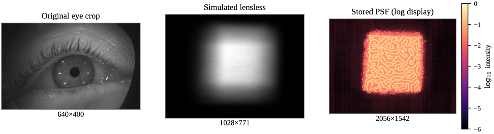
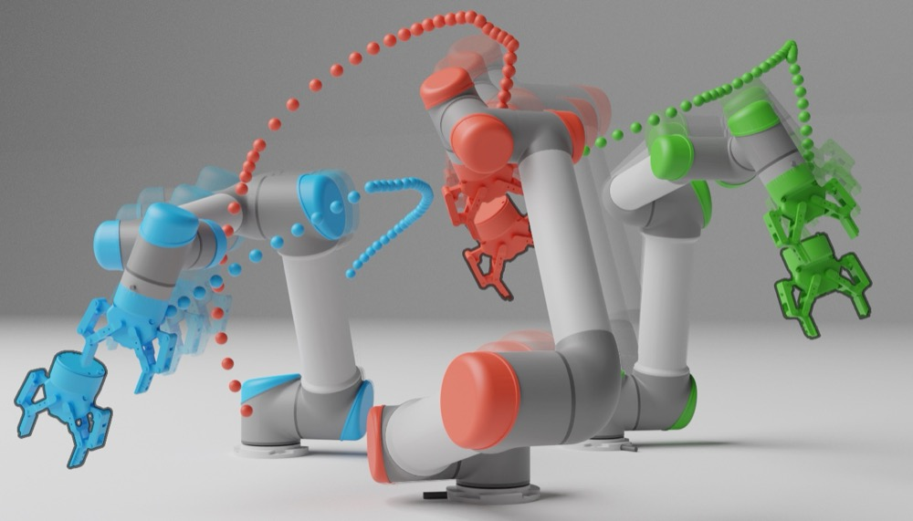
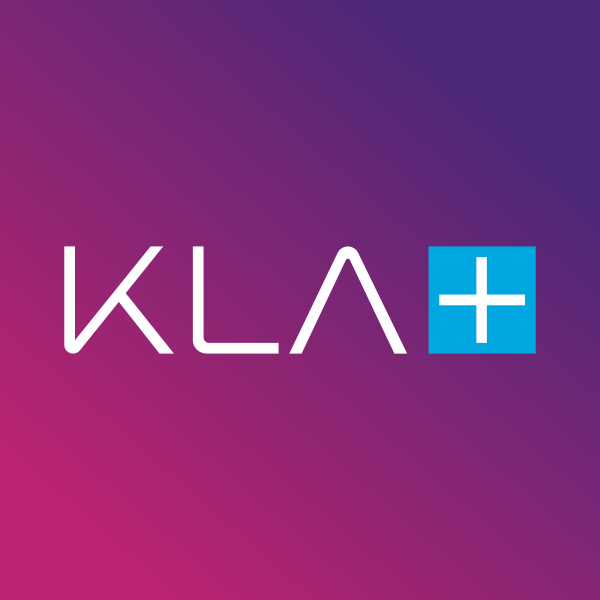
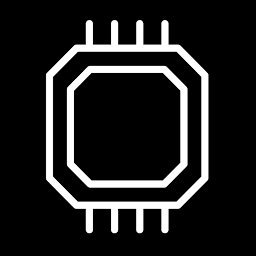

|
|
Rahul Vimalkanth
I am a final year undergraduate student in Electrical Engineering at
IIT Madras. My research sits at the intersection of
embodied AI, robot learning, computer vision, and neurosymbolic systems, with a broader goal of
building intelligent systems that can perceive, reason, and act reliably in the physical world.
This past summer I was a Software Engineering Intern at Adobe,
building a semantic layout engine for responsive interface generation.
At IIT Madras I was a Young Research Fellow working on
efficient vision models for industrial anomaly detection with
KLA Corporation, and a researcher in the
Computational Imaging Lab studying lensless gaze
sensing and its privacy risks both advised by
Prof. Kaushik Mitra.
Previously, I worked with
Prof. Pradipta Biswas at the
Robert Bosch Centre for Cyber-Physical Systems,
IISc Bangalore, on pose estimation with dynamic 3D Gaussian splats.
Email /
Scholar /
LinkedIn /
GitHub
|
|
I am broadly interested in embodied AI and robot learning, with a focus on enabling agents to learn effective representations from perception, reason over long-horizon tasks, adapt across changing environments, and make reliable decisions under partial observability and real-world uncertainty.
Papers and preprints are ordered by recency. Please see my
Google Scholar
for a complete and up-to-date publication list.
|
|

|
Lensless Gaze Is Not Private by Default: Auditing Identity Leakage Across Disclosure Surfaces
Rahul Vimalkanth, Kaushik Mitra
ECCV 2026 Workshop
PFATCV Workshop, European Conference on Computer Vision
An analytical framework for auditing identity leakage in lensless gaze sensing across optical measurement,
digital representation, storage, and output disclosure surfaces, showing that visually unintelligible
lensless measurements remain highly identifying.
|
|

|
Coupling-Aware Planner Exploration for Shared-Workspace Multi-Manipulator Motion Planning
Rahul Vimalkanth
ICRA 2026 Workshop
ICRA 2026 Workshop on Xplore: Exploration in Robotics
A coupling-aware planner selection study for shared-workspace multi-manipulator motion planning.
The work examines when to rely on decoupled, hybrid, or joint-space planning under interaction uncertainty.
|
|
Research and industry roles, ordered by recency.
|
|
|
Frontier AI Fellow, Pathway
Researching memory architectures for long-context reasoning and long-horizon decision making. The work
develops a unified state-update view of memory mechanisms spanning fast-weight programming,
retrieval-augmented generation, linear attention, and test-time learning, and extends it to persistent
memory for agentic and embodied systems.
|
|
|
Software Engineering Intern, Adobe
Built a semantic layout engine that generates responsive mobile interfaces in Adobe Captivate,
combining graph-based document reasoning with deterministic geometric planning and bounded AI
refinement to keep output predictable. Implemented across C++, TypeScript, React, and the browser
rendering stack.
|
|

|
Young Research Fellow, IIT Madras · in collaboration with KLA Corporation
Advisors: Prof. Kaushik Mitra, Dr. Pradeep Ramachandran
Developed a knowledge-distillation framework for prototype-based industrial anomaly localization,
compressing both the deep backbone and the stored feature prototypes while preserving the spatial
detail localization depends on. The distilled model retains 99.2% of teacher accuracy at roughly 4×
compression and a 2.29× inference speedup.
|
|
|
Undergraduate Researcher, Computational Imaging Lab, IIT Madras
Advisor: Prof. Kaushik Mitra
Developed a framework for auditing identity leakage in lensless gaze sensing across optical,
representational, storage, and output surfaces, showing that visually unintelligible measurements
remain highly identifying. Proposed a public–private feature representation that reduces identity
leakage while preserving gaze estimation accuracy.
|
|

|
AI Intern, Tattvam AI
Investigated abstract reasoning and program synthesis on ARC-AGI benchmarks, which are designed to
expose generalization failures beyond language-model pattern matching. Evaluated reasoning-oriented
solution strategies and parameter-efficient fine-tuning for few-shot task adaptation.
|
|